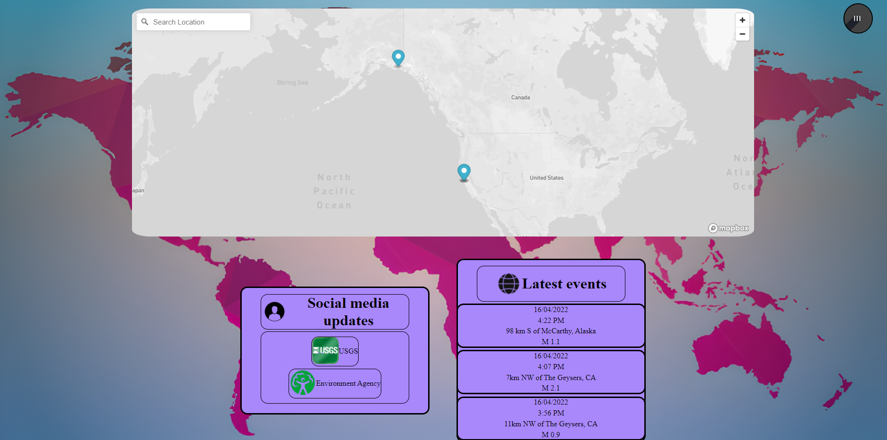

3.2 Pagini
Home
Pagina default "Home" arată harta lumii cu toate dezastrele naturale
întamplate recent marcate în locațiile lor corespunzătoare. În
chenarul ”Latest Events” apar ultimele 3 evenimente întâmplate din
toate lumea. În stânga apar linkuri cu rețelele de socializare ale
instituțiilor care oferă API-urile pentru site.

Login
Utilizatorii au opțiunea de a crea un cont pe platformă. La crearea
unui cont platforma va prelua e-mailul utilizatorului pentru
împingerea notificărilor. Contul va reține preferințele utilizatorului
(locațiile de interes, tipul de dezastru natural de interes etc.)

Înregistrare
O pagină care preia date despre un nou utilizator: nume, prenume,
e-mail și parolă. Logarea are loc cu e-mail-ul si parola.
Contact
O pagină care oferă detalii de contact pentru echipa de dezvoltatori.

3.3 Experiența utilizatorului
Odată intrat pe site utilizatorul vede varianta implicită a site-ului:
harta cu toate evenimentele întâmplate în ultimele 24 de ore, un feed
cu ultimele 3 evenimente și niște scurte detalii despre ele, o căsuță
care are social media relevant site-ului. Navigarea între pagini se
face cu butonul din colț dreapta sus. Click-ul pe acest buton
dezvăluie un chenar cu toate paginile site-ului (menționate mai sus
mai puțin pagina de Înregistrare care apare pe pagina de login).
În momentul în care în vreo zonă salvată în cont de utilizator apare
un dezastru natural ales în cont, utilizatorul va primi pe adresa de
mail folosită la crearea contului un mesaj cu un rezumat despre
eveniment, precum și o acțiune sugerată de site.
Depinzând de severitatea evenimentului, planul poate consista ori în
indicații precum părăsirea zonei rezidențiale și sugerarea unui loc de
adăpost, sugestii de pregătire (în caz de furtuni). Pentru evenimente
cu importanță scăzută nu vor apărea indicații.
3.4 Backend
Backend-ul este realizat cu PHP. Funcționalitatea backendului este
simplă: scriptul PHP aduce informații în format .json din API-urile
oferite de Environment Agency Real Time Flood-Monitoring și USGS
Earthquake Catalog respectiv .xml din API-ul oferit de NOAA National
Weather Service. In backend sunt selectate anumite câmpuri relevante
din fișiere, cum ar fi numele zonei faptei etc. și mai puțin date
tehnice, care urmează să fie afișate în feed.
Planul de evacuare (unde este necesar) este generat automat dintr-un
set de mesaje standard - însă în cazurile unde este necesară o
evacuare se va selecta o zonă fără prognoză dăunătoare cât mai
apropiată de zona implicită.